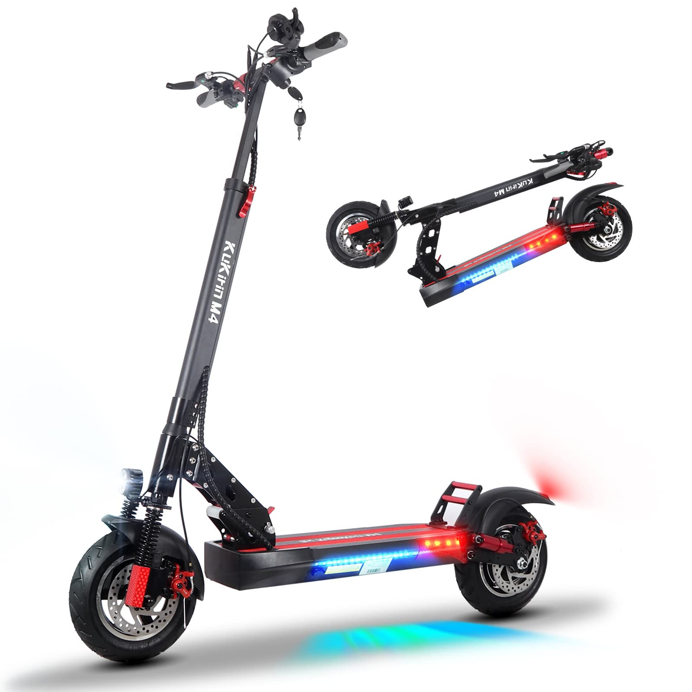

Mi página web final joseluis
PATINETE ELECTRICO
Los patinetes electricos son un medio de transporte que se suele usar para desplazarse por pueblos o ciudades mediante algunas normas que se deben seguir.

Para evitar accidentes tenemos que tener en cuenta que no es una moto, tiene su limite y normas que se deben seguir a toda costa.
LIMITE DE VELOCIDAD Y NORMAS
MI PATINETE ELECTRICO